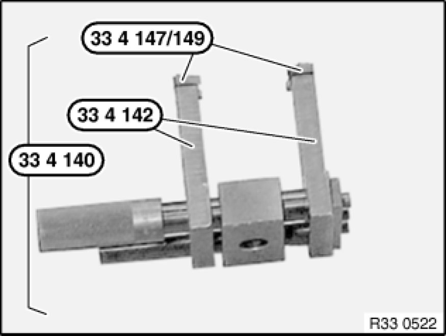
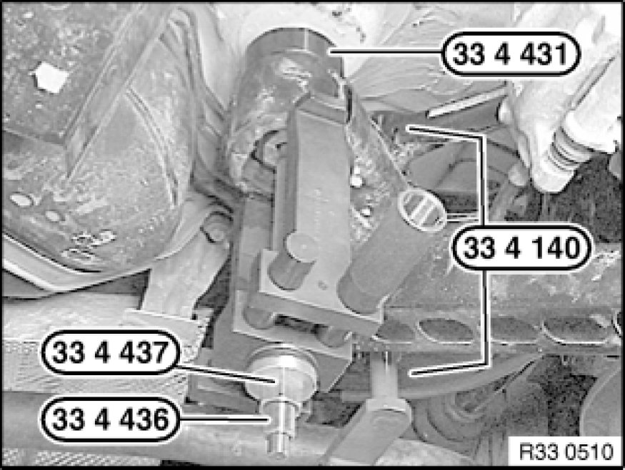
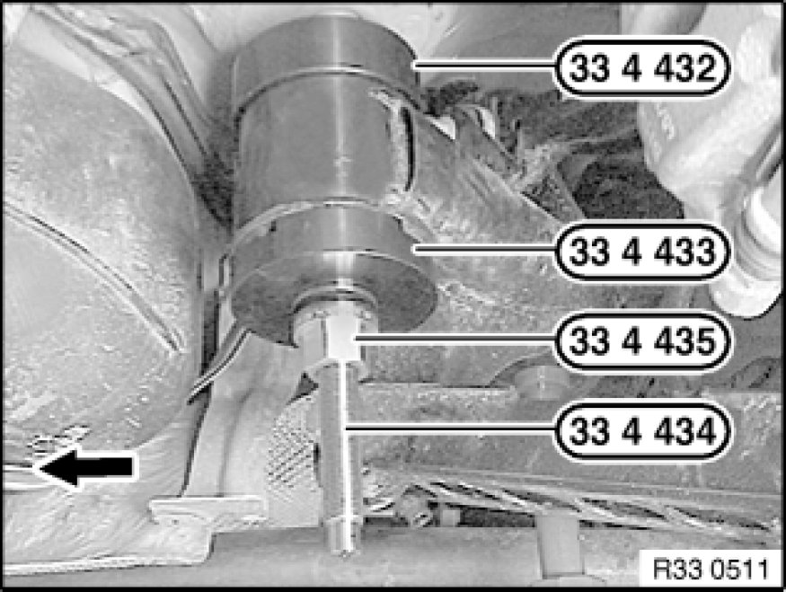

33 33 101 Replacing Two Rubber Mounts (Front) for Rear Axle Carrier
33 33 101 - Replacing two rubber mounts (front) for rear axle carrier

Special tools required:
- 33 4 140
- 33 4 142
- 33 4 147
- 33 4 149
- 33 4 431 33 4 430 Set of Tools
- 33 4 432 33 4 430 Set of Tools
- 33 4 433 33 4 430 Set of Tools
- 33 4 434 33 4 430 Set of Tools
- 33 4 435 33 4 430 Set of Tools
- 33 4 436 33 4 430 Set of Tools
- 33 4 437 33 4 430 Set of Tools

Necessary preliminary tasks:
- Lower rear axle carrier

If necessary, assemble special tools 33 4 140 , 33 4 142 and 33 4 147 as illustrated.
If necessary, position new thrust pieces 33 4 149 with countersunk screws on special tool 33 4 140 .

Coat top edge of rubber mount with Circo Light (refer to BMW Parts Service).
Fit special tool 33 4 431 33 4 430 Set of Tools on rubber mount in such a way that edge of rubber mount disappears in special tool.
Oil special tool 33 4 436 33 4 430 Set of Tools slightly before use.
Align special tool 33 4 140 by way of openings in rubber mount.
Note:
Ensure it is correctly supported on bearing bushing of rear axle carrier.
Withdraw rubber mount from bearing bushing with special tools 33 4 436 33 4 430 Set of Tools, 33 4 437 33 4 430 Set of Tools, 33 4 140 and 33 4 431 33 4 430 Set of Tools.

Installation:
Coat new rubber mount with Circo Light (refer to BMW Parts Service).
Oil special tool 33 4 434 33 4 430 Set of Tools slightly before use.
Assemble special tools 33 4 432 33 4 430 Set of Tools, 33 4 433 33 4 430 Set of Tools, 33 4 435 33 4 430 Set of Tools and 33 4 434 33 4 430 Set of Tools as illustrated.
Align rubber mount by way of arrow to direction of travel.
Draw in rubber mount as far as it will go.
After installation:
- Bleed braking system 34 00 050 Bleeding Brake System With DSC